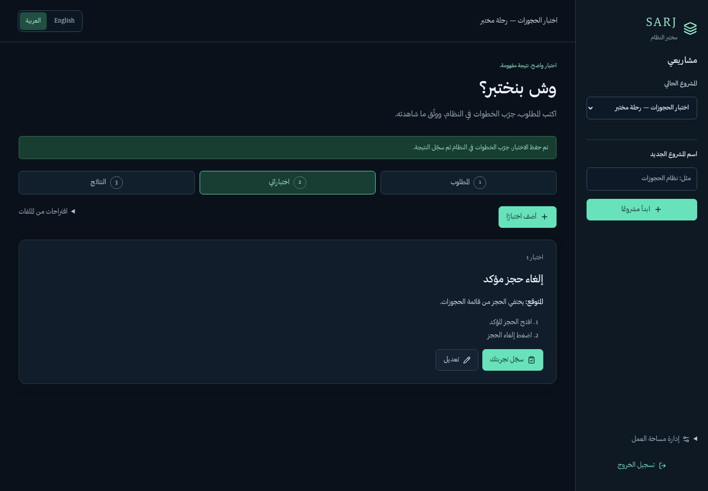
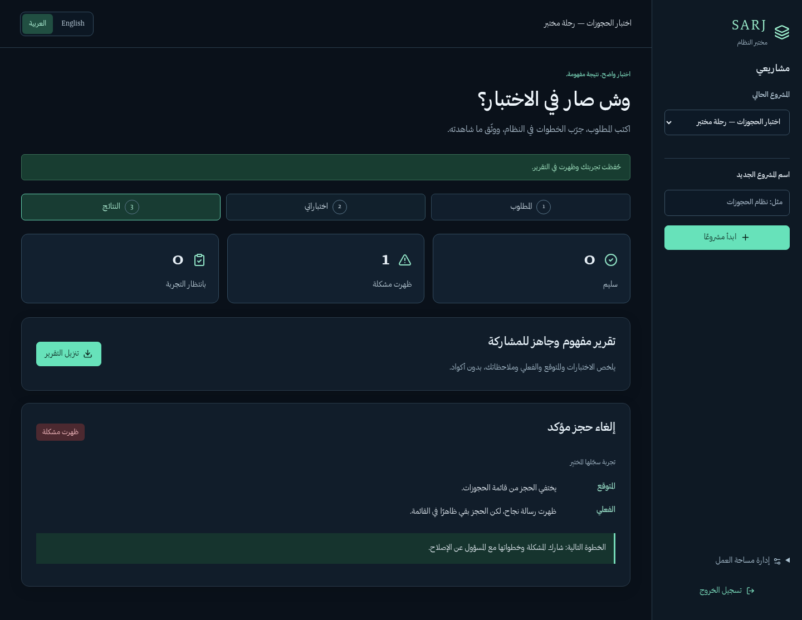

مساحة واحدة لتنظيم الاختبار، تسجيل ما حدث، ومشاركة النتيجة بوضوح.
اضغط Space لكشف الفكرة التالية، ثم الانتقال للشريحة التالية.
متطلب في ملف.
ملاحظة في محادثة.
وصورة بلا سياق.
يصعب معرفة: ماذا اختبرنا؟ وماذا بقي؟
أضف تعليمات المهمة، صور الواجهة، أو وصف خدمة النظام.
اقتراح الذكاء مسودة للمراجعة؛ ليس نتيجة اختبار ولا حقيقة مؤكدة.
اكتب ما ستفعله، ثم ما تتوقع أن يحدث.
افتح الحجز ← اضغط إلغاء
المتوقع: يختفي من القائمة.
كل خطوة في حقل مستقل، ويمكن تعديل الحالة قبل تجربتها.

لقطة تجربة سابقة · اضغط الصورة لتكبيرها.
نفّذ الخطوات في النظام.
سجّل ما شاهدته، وأرفق الدليل عند الحاجة.
تجربة سجّلها المختبِرراجع الحالة واعتمدها أولًا.
حدّد الهدف والصلاحيات، ثم شغّل C# أو Dart.
نتيجة تنفيذ فعليةفشل الاتصال «متعذر»؛ لا يصبح عيبًا في المنتج تلقائيًا.
السلوك يطابق المتوقع.
فرق موثق يحتاج متابعة.
سبب يمنعنا من إكمال الحكم.
تقرير مقروء للمشاركة، وتفاصيل تقنية لمن يحتاجها.

تجربة سابقة، لا نتائج NZL-217 · اضغط للتكبير.
−3 ليالٍ
إنشاء الحجز أعاد 200 ومعرّفًا.
قراءة مستقلة أعادت التاريخين نفسيهما.
إنشاء ثم قراءة: دليلان على عيب واحد.
التحقق مستقل عن محرك سرج · NZL-217 · 10 نوفمبر 2026. لا يثبت أن API هي خلفية صور الكونسول.
نفس المعاني والحقول، مهما اختلف مصدر الاختبار أو لغة التشغيل.
| ما الذي نوحّده؟ | ماذا يكسب الفريق؟ |
|---|---|
| المصدر ← الحالة ← الدليل | يمكن تتبّع سبب كل اختبار. |
| المتوقع / الفعلي / الحالة | نتائج أسهل في المقارنة والمراجعة. |
| عقد تنفيذ مشترك لـ C# و Dart | نفس تنظيم المخرجات والتقارير. |
Standardization = طريقة عمل متسقة؛ لا شهادة مطابقة ولا ضمان لجودة النظام.
ابدأ التجربة مباشرة، دون تسجيل دخول.
بيانات تعليمية منفصلة، ومهمة جاهزة للتجربة.
محلي بلا حساب · بيانات المالك غير منقولةدخول Google وصلاحية المالك فقط.
لا يعرض بياناته للزائر أو للنسخة المحلية.
دخول Google مخصص للمالكمساعد Cloudflare اختياري بحصة يومية؛ يقترح، ولا يحكم على النتيجة.
اكتشفنا قصورًا وأصلحناه في المحرك وعرض النتائج؛ أدلة المحاولة الأصلية محفوظة.
انتهى العرض · ارجع بالأسهم أو استخدم وضع المقدم لعرض الملاحظات.